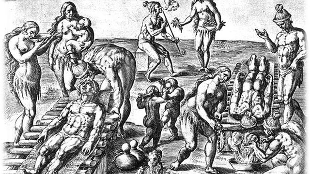
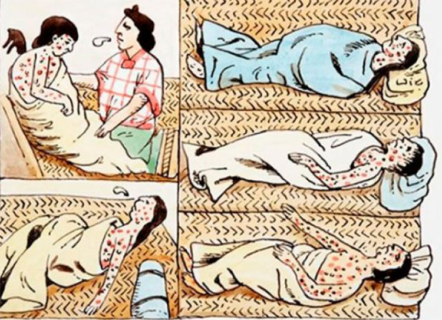
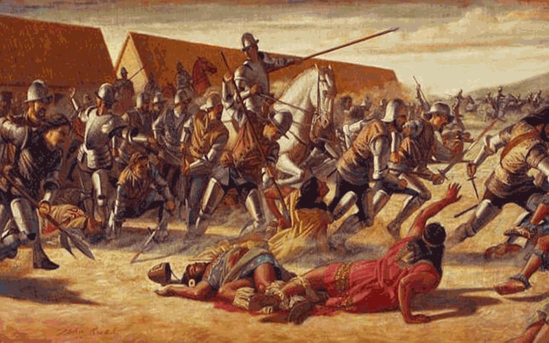
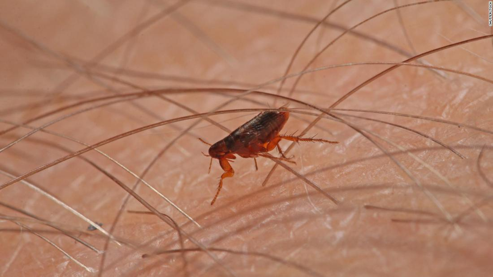
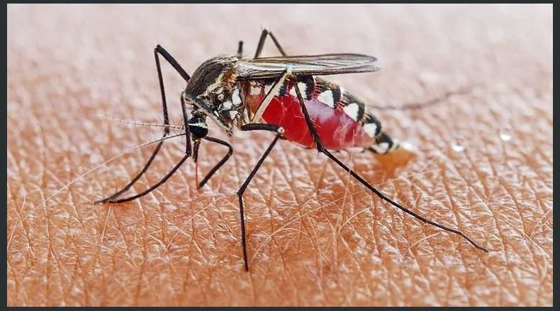

ENFERMEDADES MORTALES
Viruela
La viruela fue la enfermedad que más muertes ocasionó en el nuevo continente, siendo ésta, una de las principales causas que afectaron a miles de Tribus y Razas indígenas que vivían regadas en toda la América, incluyendo sus Islas.
Al igual que la Influenza, la Viruela fue una de las enfermedades mortales de la Conquista de América. El primer ataque se ocasionó en Santo Domingo entre los años 1518 y 1519. Traída desde Castillas, también afectó a algunos españoles, pero ninguno perdió la vida, ahora para los indios de la isla, fue mortal.
La Viruela, se propagó tan rápido, que en pocos días ya estaba en Puerto Rico, matando a indios de la Cultura Arawak, los cuales se veían vencidos a causa de las afecciones que ésta trae. Desde las Antillas llegó a México, gracias a un viaje que hizo Hernán Cortés en el año 1520.
La Viruela es una enfermedad infecciosa, a menudo fatal, que se presenta con fiebre seguida de una erupción papular que produce cicatrices. La introducción de la vacuna contra ésta, la desarrolló el médico inglés Edward Jenner en el año 1796, dejando por visto, que para la época de la Conquista de América, los indios de las diferentes etnias y tribus amerindias no tenían protección alguna contra tal amenaza.
Sarampión
El Sarampión apareció en el continente de América justo después, que también atacó a los pocos indios que habían sufrido el gran impacto que les dejó la Viruela entre los años 1518 hasta 1526.
El Sarampión, se extendió desde México hasta Perú, matando a su paso, a casi todos los desprotegidos indios. Ya que ésta, es una enfermedad completamente comunicable de carácter agudo que se trasmite a través de secreciones de los ojos, nariz y garganta, por contagio directo o por infección de gotitas de saliva.
El Sarampión se propaga a través del aire, por tos, estornudos, o al hablar. Los indios que habitaban en continente de América, no tenían ninguno de éstos conocimientos, es por eso, que entre ellos se propagó mucho más rápido y de manera más violenta. La enfermedad mortal es encontrada en todas partes, sin tener en cuenta el clima, raza, o nivel económico.
Tifus
El Tifus, es otra de las enfermedades mortales que trajeron los europeos al continente de América. Éste, apareció por primera vez en el año 1489, momento en el cual fue introducido desde Chipre hacía España, acabando con la vida de 17.000 soldados de los reyes Católicos.
El Tifus es comunicado a través del piojo corporal o por la pulga de la rata y una epidemia puede aparecer en todo lugar en donde existen hacinamiento de personas, hambre y miseria. Estos factores eran desconocidos por los indios del nuevo mundo, los cuales, al ser tratados como esclavos y llevándolos a una manera de vida sin ningún tipo de comodidad, al igual que los negros de las tribus africanas, era fácil que se contagiaran entre ellos mismos sin saberlo, ocasionándole la muerte a millares.
Malaria
Aparte de las otras enfermedades mortales de la conquista de América, también existió y existe actualmente la Malaria. Ésta, es propagada por mediación del mosquito anofeles, provocando periódicos ataques de escalofríos, fiebre y sudoración.
A pesar de que muchas de las antiguas Culturas amerindias ya conocían ciertos efectos, sumándole las otras enfermedades traídas por los conquistadores españoles, se veían muy débiles y cualquier afección aparte de la que ya se habían contagiado les causaba hasta la muerte.
Fiebre Amarilla
La Fiebre Amarilla es una enfermedad infecciosa aguda producida por un virus filtrable que se transmite por la picadura de un mosquito, el Aëdes aegypti, en cuyo cuerpo vive y se reproduce el virus.
Por lo general, después de 3 a 6 días de la picadura del mosquito, la cara se inflama y pone roja, los ojos se cubren con una especie de velo, los labios y la lengua adquieren un color rojo vivo, se registra fiebre alta con dolor de cabeza y espalda. Al pasar 2 o 3 días más, la temperatura desciende por debajo de lo normal, el pulso se hace y lento y la piel se pone fría y adquiere el color amarillento que da nombre a la enfermedad.
Hasta este siglo, en grandes extensiones de América del Centro y del Sur se consideran inhabitables a causa de los desastrosos efectos de la Fiebre Amarilla. Desde su propagación en África Occidental entre los siglos XVI y XVII, saltó al Nuevo Continente debido al tráfico de esclavos.
Las distintas razas de esclavos africanos, ya habían creado cierta inmunidad a esta feroz enfermedad. Por el contrario, tanto indios como colonos europeos eran tan fuertemente golpeados por la fiebre amarilla que les ocasionaba la muerte.